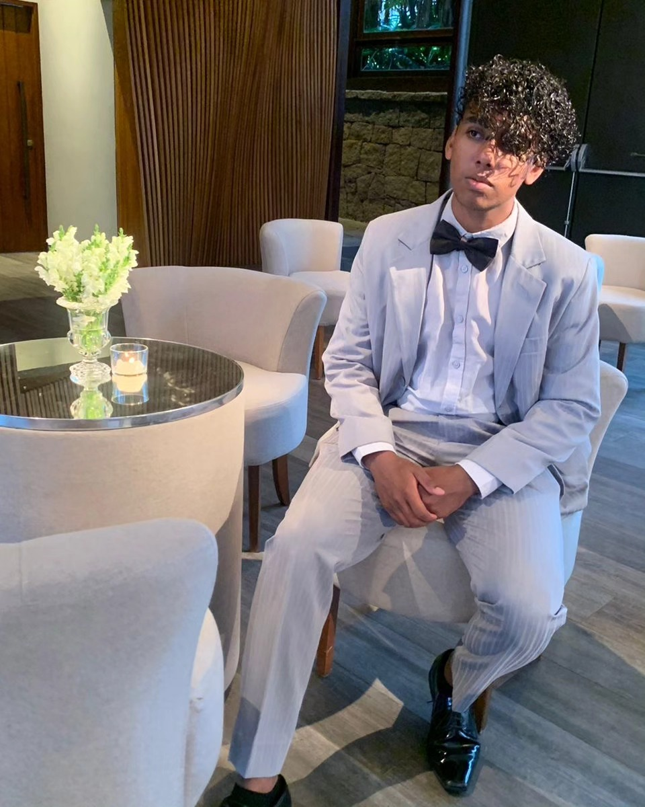

Spazio Hair Salão
Esse foi um dos primeiros projetos reais que fiz. É um site de um salão de beleza, com apresentação de serviços, formulário interativo de agendamento e layout responsivo.
Tecnologias:HTML
CSS
JavaScript
Estudante de Tecnologia em Análise e Desenvolvimento de Sistemas, com conhecimentos em Front-end e experiência com suporte N2.
Busco oportunidades na área de tecnologia, especialmente em desenvolvimento e infraestrutura, enquanto continuo meus estudos e me preparo para seguir na área de Cibersegurança.
Ver Projetos
Aqui estão alguns dos meus projetos que refletem meus conhecimentos e minha evolução na área de tecnologia.
Esse foi um dos primeiros projetos reais que fiz. É um site de um salão de beleza, com apresentação de serviços, formulário interativo de agendamento e layout responsivo.
Tecnologias:HTML
CSS
JavaScript
Meu interesse pela área de tecnologia começou no meu primeiro emprego, onde trabalhei com suporte N2. Durante a faculdade de Tecnologia em Análise e Desenvolvimento de Sistemas, tive contato com a disciplina de Cibersegurança e me identifiquei com a área.
Trabalhei por um ano e meio com suporte técnico N2 em uma escola adventista de Campo Mourão. Durante esse período, tive contato com diferentes áreas da tecnologia, incluindo manutenção de computadores, monitoramento por câmeras, gerenciamento de acessos à rede e suporte a equipamentos multimídia.
Quero construir uma carreira sólida em Cibersegurança, continuar desenvolvendo meus conhecimentos e conquistar estabilidade profissional.
FORMAÇÃO
Aqui estão meus estudos, cursos e certificações que fortalecem minha base de conhecimento e me ajudam a evoluir na área de tecnologia.
Centro Universitário Integrado.
Previsão de conclusão: Julho de 2027
Graduação em andamento, com foco em desenvolvimento de software, Front-end, Back-end e soluções tecnológicas
Graduação em andamentoAqui estão as minhas redes para contato
marlon.arantes@protonmail.com GitHub LinkedIn